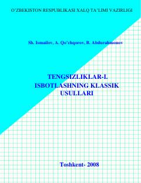

TIKlassik sonli tengsizliklar va ularni isbotlash usullari bo'yicha o'quv qo'llanma.
Ushbu qo'llanma klassik sonli tengsizliklar va ularni isbotlash usullarini o'z ichiga oladi. Unda turli matematik olimpiadalarda uchraydigan masalalar va ularning yechimlari batafsil bayon etilgan.